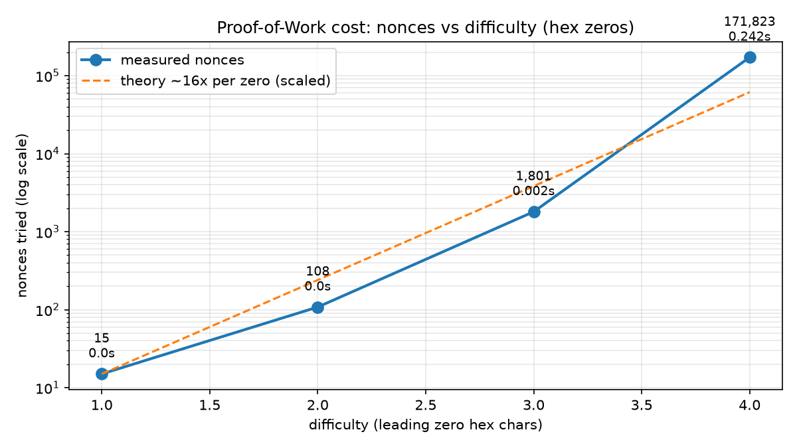
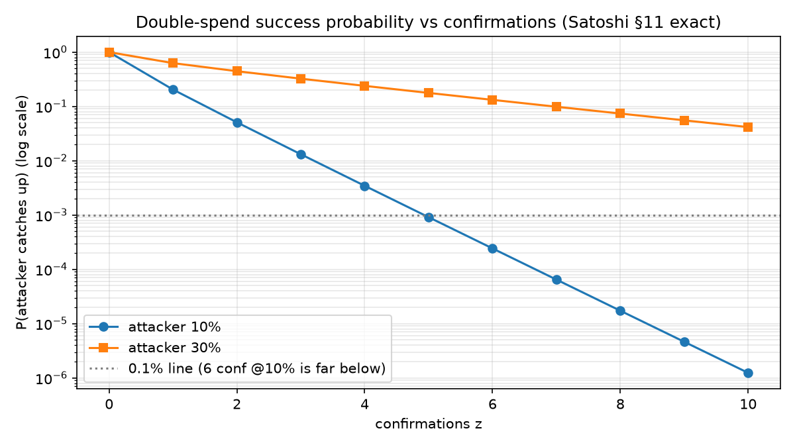
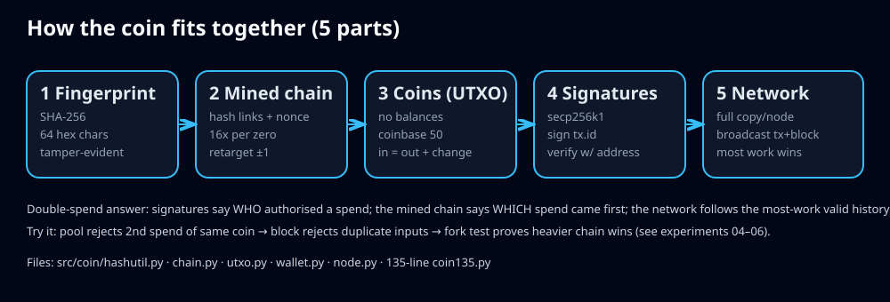

🌱 Beginner guide — read this and you are a professional
Let's work this out in a step-by-step way to be sure we have the right answer. No jargon without an explanation. Each step ends with something you can run.
30→90, whole seal changes (52% bits). PYTHONPATH=src python3 experiments/01_fingerprint.pyPYTHONPATH=src python3 experiments/02_chain_tamper.pyPYTHONPATH=src python3 experiments/03_mining_cost.pyPYTHONPATH=src python3 experiments/04_double_spend.pyPYTHONPATH=src python3 experiments/05_signatures.pyPYTHONPATH=src python3 experiments/06_forks.pyCheckpoints: after Step 2 you can explain tamper-evidence; after Step 4 the double-spend; after Step 6 the 51% rule. Then prove it in the quiz below.
🎬 Demo — the whole story in 10 lines
Real output of make demo (coin135.py): two blocks, one payment, pool double-spend + forgery blocked.
Prefer your own recording? Steps: docs/DEMO.md (GIF ≤5 MB, result in first 10 s, transcript below for accessibility).
🧩 The 5 parts (what each file does)
src/coin/hashutil.pySHA-256, avalanche measure, difficulty checks.
src/coin/chain.pyBlock, nonce search, validate loop, retarget ±1, most-work forks.
src/coin/utxo.pyUTXO, coinbase 50, in==out, change, pool guards.
src/coin/wallet.pysecp256k1 keys,
04‖X‖Y addresses, RFC6979 sign/verify.src/coin/node.pyFlask API, broadcast, peer resolve. Aliases for two tutorial dialects.
coin135.pyZero framework. Start here, then read the modules.
Who is this for
| You | Do this |
|---|---|
| Curious beginner | Beginner guide → quiz → make demo |
| Student / interviews | Exps 01–06 → FAQ → whiteboard the 5 parts with numbers |
| Teacher | docs/DEMO.md 60-min lab: demo → break-it → re-verify |
| Researcher | §5 seeds + paper/PHD_ROADMAP.md: fees, Merkle, ASERT, checkpoints |
| Builder / auditor | src/coin/node.py + benchmarks/*.json (every number regenerable) |
📊 Measured, not quoted

Mining: 15 → 108 → 1,801 → 171,823 nonces for 1–4 zeros (~16×/zero, geometric noise). Regenerate: experiments/03_mining_cost.py.

Confirmations: 6 blocks ≈ 0.024% at 10% attacker, ≈13% at 30%. Convention, not protocol. Regenerate: experiments/06_forks.py.

genesis recomputed: 000000000019d6689c085ae165831e934ff763ae46a2a6c172b3f1b60a8ce26f ✓ byte-exact nonce=2083236893 bits=0x1d00ffff time=1231006505 (2009-01-03) ✓ under target live: BTC ~$86.3k (CoinGecko) · next retarget ≈ +4–5% (mempool.space) 2026-10-06
🚀 Run it (3 commands)
python3 -m pip install -r requirements.txt make test # 8 passed make demo # 2 blocks, 1 payment, attacks blocked
make experiments # all 8 exps + benchmarks/*.json docker compose up --build # 3 nodes: :3001 :3002 :3003 curl http://localhost:3001/blocks curl -X POST http://localhost:3001/mineBlock
🔌 API (both dialects)
| Method | Path | Does |
|---|---|---|
| GET | /blocks (= /chain) | full chain |
| POST | /mineBlock (= /mine) | seal pool + coinbase, broadcast |
| POST | /sendTransaction (= /transactions/new) | validate → mempool → broadcast |
| GET | /balance?address=04… · /address/04… | wallet sum + UTXOs |
| POST/GET | /addPeer · /peers · /nodes/resolve | peers + adopt heaviest valid chain |
Config: target block time 10 s, retarget 10 blocks, coinbase 50 (Bitcoin: 600 s, 2016 blocks, 3.125). Flags: --port, --peer (repeat), COIN_PRIVATE_KEY.
🧠 Quiz — from scratch to pro (10 questions)
Instant explanations. Score 8+/10 and you can whiteboard all five parts. Your score never leaves this page.
0 / 10 answered · 0 correct
❓ FAQ (interview answers)
What stops the double-spend?
Signatures authorise; the chain orders. Pool reserves the coin (2nd spend rejected at creation), blocks reject duplicate inputs, forks resolve by most work. Try Exps 04 + 06.Where is my balance?
Nowhere on-chain. Nodes store unspent outputs; wallets sum yours. See/address/….Why 6 confirmations?
At 10% attacker: ~0.024% success — but ~13% at 30%. At 50%+: nothing helps. It's economics (hardware + energy + price crash), not cryptography.Is this real money?
No — learning toy. No fees/Merkle/scripts/halving/persistence. That list is the extension roadmap.What do I break on purpose?
Reward 50→5000 (Exp 02), pool double-spend (04), forged amount (05), secret fork (06). Each script shows the rejection.🌐 Read this repo as a website (GitHub Pages)
- Push
mainwithdocs/index.html+docs/.nojekyll(both already in repo). - GitHub → Settings → Pages → Source: Deploy from a branch → Branch:
main→ Folder:/docs→ Save. - Wait ~1 min →
https://<you>.github.io/<repo>/. Or use Source: GitHub Actions with includedpages.yml.
Glossary: hash=seal · nonce=lottery ticket · difficulty=zeros required · coinbase=mint tx · UTXO=unspent banknote · mempool=waiting room · fork=competing tips · 51%=majority rewrite (prohibitively expensive at scale).